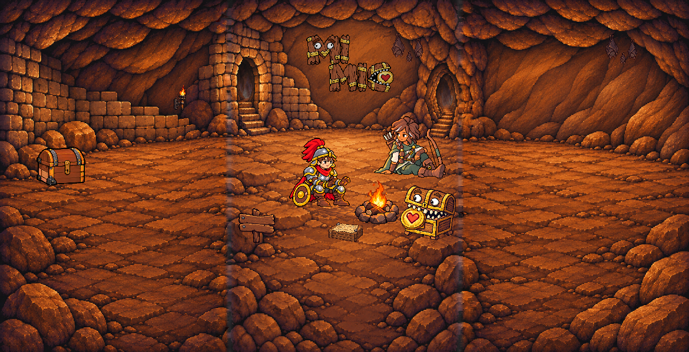
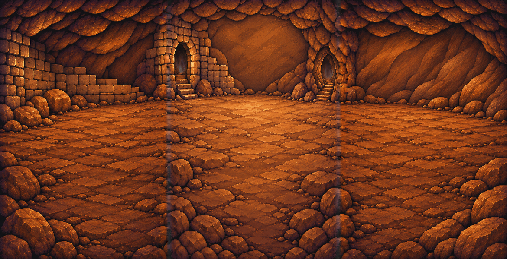

<!doctype html><html lang="zh-Hant"><meta charset="utf-8">
<meta name="viewport" content="width=device-width, initial-scale=1">
<title>3R2 手機探索條 · 視覺審核</title>
<style>
*{box-sizing:border-box}body{margin:auto;max-width:1200px;padding:16px;background:#211710;color:#f8e4c9;font:16px system-ui}
button,select{font:inherit;margin:4px;padding:6px}img{display:block;image-rendering:pixelated}
#viewport{overflow-x:auto;max-width:390px;margin:12px 0}#scene{width:1170px;height:600px}
.pair{display:flex;flex-wrap:wrap;gap:12px}figure{margin:0;max-width:100%}.zoom{width:384px;max-width:100%;height:420px;overflow-y:auto;overflow-x:hidden;position:relative}
.zoom img{width:7020px;height:3600px;position:absolute;top:0}a{color:#ffcc8d}
.full-comparison img{width:100%;height:auto}</style><main><h1>3R2 手機探索條</h1><p>待視覺審核。初始顯示中段，可水平捲動或使用分段按鈕。</p>
<label>開箱格 <select id="frame"><option>closed</option><option>latch-release</option><option>unlatched</option><option>cracked</option><option>half-open</option><option>opening-wide</option><option>near-open</option><option>open</option></select></label>
<button data-x="0">左段</button><button data-x="390">中段</button><button data-x="780">右段</button>
<div id="viewport" tabindex="0"></div>
<p><a id="full" href="samples/landing-phone-exploration-3r2/scene-closed.png">開啟全寬合成圖</a> · <a href="samples/landing-phone-exploration-3r2/layout.json">layout.json</a></p>
<h2>3R／3R2 全條背景</h2><div class="full-comparison"><figure><figcaption>3R</figcaption><a href="samples/landing-phone-exploration-3r/phone-architecture.png"></a></figure><figure><figcaption>3R2</figcaption><a href="samples/landing-phone-exploration-3r2/phone-architecture.png"></a></figure></div>
<h2>接縫前後對照（6×）</h2><p>各圖可垂直捲動檢查全高。</p><h3>x = 390</h3><div class="pair"><figure><figcaption>3R</figcaption><div class="zoom" tabindex="0"></div></figure><figure><figcaption>3R2</figcaption><div class="zoom" tabindex="0"></div></figure></div><h3>x = 780</h3><div class="pair"><figure><figcaption>3R</figcaption><div class="zoom" tabindex="0"></div></figure><figure><figcaption>3R2</figcaption><div class="zoom" tabindex="0"></div></figure></div></main>
<script>
const viewport = document.getElementById("viewport");
const scene = document.getElementById("scene");
const frames = {"closed":"samples/landing-phone-exploration-3r2/scene-closed.png","latch-release":"samples/landing-phone-exploration-3r2/scene-latch-release.png","unlatched":"samples/landing-phone-exploration-3r2/scene-unlatched.png","cracked":"samples/landing-phone-exploration-3r2/scene-cracked.png","half-open":"samples/landing-phone-exploration-3r2/scene-half-open.png","opening-wide":"samples/landing-phone-exploration-3r2/scene-opening-wide.png","near-open":"samples/landing-phone-exploration-3r2/scene-near-open.png","open":"samples/landing-phone-exploration-3r2/scene-open.png"};
viewport.scrollLeft = 390;
document.querySelectorAll("button[data-x]").forEach(button => button.onclick = () => viewport.scrollLeft = Number(button.dataset.x));
document.getElementById("frame").onchange = event => {
  scene.src = frames[event.target.value];
  document.getElementById("full").href = scene.src;
};
</script></html>